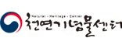
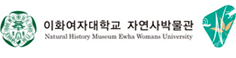
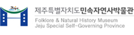

본문바로가기
홈
1뎁스명
2뎁스명
네트워크 구성도
자문/전문위원
DB구축 및 개발 자문
자문
연구 개발
자연사정보
텍스트정보
관리·연계
나리스관리
콘텐츠관리
백업관리
연계서비스
DB 개발
DB 구축
국문텍스트 작성
영문텍스트 작성
이미지 촬영
연계
연계기관
META
API
국가생명연구자원 통합정보시스템(KOBIS)바로가기
META
API
한국데이터포털(KDR) 바로가기
META
API
네이버 바로가기
OPEN
API
공공데이터포털 바로가기
OPEN
API
세계생물다양성정보기구 바로가기
참여기관
원시데이터 확보 및 사진정리



DB 구축 / 연계
참여기관 소개
국립
공립
사립
㈜한국생태네트워크
경기도수산해양자원연구소 홈페이지바로가기
경기도수산해양자원연구소
경기도 양평군 용문면 상광길 23-2 (12513)
경남산림환경연구원 홈페이지바로가기
경남산림환경연구원
경남 진주시 이반성면 수목원로 386 (52615)
경북대학교자연사박물관 홈페이지바로가기
경북대학교자연사박물관
경희대학교자연사박물관 홈페이지바로가기
경희대학교자연사박물관
서울특별시 동대문구 경희대로 26 (02447)
국립과천과학관
경기도 과천시 상하벌로 110 (13817)
국립대구과학관 홈페이지바로가기
국립대구과학관
대구광역시 달성군 유가읍 테크노대로 6길 20 (43023)
국립문화재연구소 천연기념물센터 홈페이지바로가기
국립문화재연구소 천연기념물센터
대전광역시 서구 만년동 유등로 927 (35204)
국립산림과학원 난대・아열대산림연구소 홈페이지바로가기
국립산림과학원 난대・아열대산림연구소
제주도 서귀포시 돈내코로 22번길 (63582)
국립세종수목원 홈페이지바로가기
국립세종수목원
세종특별자치시 연기면 수목원로 136 국립세종수목원
국립수목원 홈페이지바로가기
국립수목원
경기도 포천시 소흘읍 광릉수목원로 415 (11186)
국립중앙과학관 홈페이지바로가기
국립중앙과학관
대전광역시 유성구 대덕대로 481 (34143)
군산철새연구소 홈페이지바로가기
군산철새연구소
전라북도 군산시 성산면 성덕리
다살이생물자원연구소 홈페이지바로가기
다살이생물자원연구소
대전 유성구 신성로 102번길 다숲빌라트 103호 (34116)
대전광역시 한밭수목원 홈페이지바로가기
대전광역시 한밭수목원
대전광역시 서구 둔산대로 169 (35204)
목포자연사박물관 홈페이지바로가기
목포자연사박물관
전라남도 목포시 남농로 135 (58699)
몽골자연사박물관
무주곤충박물관 홈페이지바로가기
무주곤충박물관
별새꽃돌자연탐사과학관 홈페이지바로가기
별새꽃돌자연탐사과학관
충북 제천시 봉양읍 옥전4길 45 (2710)
서대문자연사박물관 홈페이지바로가기
서대문자연사박물관
서울특별시 서대문구 연희로 32길 51 (03718)
성신여자대학교 자연사박물관
서울 강북구 도봉로 76가길 55 성신여자대학교 운정그린캠퍼스 (01133)
양평곤충박물관 홈페이지바로가기
양평곤충박물관
경기도 양평군 옥천면 경강로 1496(12507)
영월동굴생태관 홈페이지바로가기
영월동굴생태관
우석헌자연사박물관 홈페이지바로가기
우석헌자연사박물관
경기도 남양주시 진접읍 금강로 1095 (12074)
우포늪생태관 홈페이지바로가기
우포늪생태관
경상남도 창녕군 유어면 세진리
이화여자대학교 자연사박물관 홈페이지바로가기
이화여자대학교 자연사박물관
서울특별시 서대문구 이화여대길 52 (03760)
인제곤충바이오센터 홈페이지바로가기
인제곤충바이오센터
강원도 인제군 상남면 미덕길 253
전남해양수산과학관 홈페이지바로가기
전남해양수산과학관
전남 여수시 돌산읍 돌산로 2876 (59771)
전라남도 완도수목원
전남 완도군 군외면 청해진북로 88번길 156 (59105)
제주자치시도 세계유산본부(한라수목원) 홈페이지바로가기
제주자치시도 세계유산본부(한라수목원)
제주도 제주시 수목원길 72(연동) 한라수목원 (63143)
제주테크노파크 생물종다양성연구소
제주도 서귀포시 남원읍 신례동로 338 (63608)
제주특별자치도 민속자연사박물관 홈페이지바로가기
제주특별자치도 민속자연사박물관
제주특별자치도 제주시 삼성로 40 (63270)
충남대학교 홈페이지바로가기
충남대학교
대전광역시 유성구 대학로 99 (34134)
충남대학교 자연사박물관 홈페이지바로가기
충남대학교 자연사박물관
대전광역시 유성구 대학로99 (34134)
한국과학기술정보연구원 홈페이지바로가기
한국과학기술정보연구원
대전광역시 유성구 대학로 245 (34141)
한국동굴생물연구소
대전광역시 유성구 진잠로 139번길 10-10(교촌동) 501호 (34225)
한국수자원공사K-water연구원 홈페이지바로가기
한국수자원공사K-water연구원
대전광역시 유성구 유성대로 1689번길 125 (34045)
한국자생식물원 홈페이지바로가기
한국자생식물원
강원도 평창군 대관령면 비안길 159-4 (25339)
한국자연사박물관 홈페이지바로가기
한국자연사박물관
충청남도 공주시 반포면 임금봉길 49-25 (32626)
한국환경생태연구소 홈페이지바로가기
한국환경생태연구소
대전광역시 유성구 테크노 1로 62-12 (34014)
한남대학교 자연사박물관 홈페이지바로가기
한남대학교 자연사박물관
대전광역시 대덕구 한남로 70 (34430)
한화 해양생물연구센터 홈페이지바로가기
한화 해양생물연구센터
제주도 남제주군 성산읍 고성리